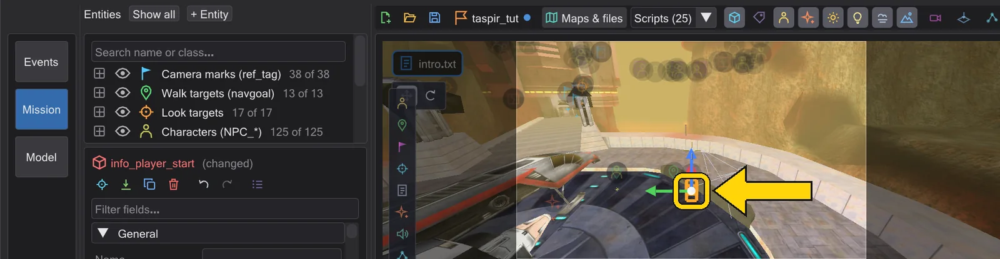
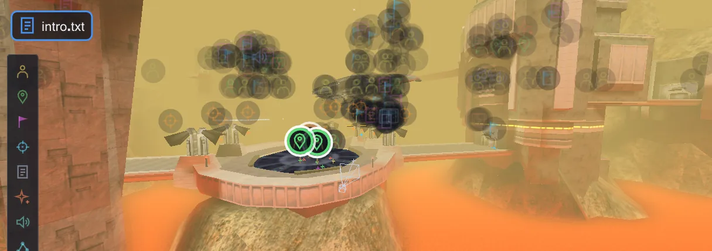

Your own mission: take-off on Taspir
A complete little mission for Jedi Academy, built from nothing: Kyle and Rosh walk across a landing pad, the camera follows them, the Raven's Claw lifts off and flies past the camera, the picture shakes and fades to black - and the game plays it.
 动画
动画This tutorial uses only the base game: the map taspir1 - the landing pad at the start of the Taspir III mission - with Kyle's ship, the Raven's Claw, and the characters Kyle and Rosh. You need nothing but Jedi Academy and BehavEd. Every picture on the following pages was taken while exactly this mission was built, step by step.
The parts#

1 · Create the mission
A new mission on taspir1: map, player start, script runner and an intro script are made for you.

2 · Place the characters
Kyle and Rosh at the south edge of the pad, and a walk target in front of the ship for each of them.

3 · Let them walk
An affect block for each character: walk to the target, wait until there, then look at the other one.

4 · The camera
A wide shot of the pad, a move down behind the two, set from the view and flown by hand.

5 · The ship takes off
Animate the Raven's Claw with four keys and save the flight as a ROFF file.

6 · Cut, shake, follow, fade
A third shot from outside the pad, a shake at lift-off, the camera turning after the ship, a fade to black - and the timing fixed in the timeline.

7 · A second script
Kyle gets a spawn script with a macro - and the split view shows both scripts side by side.

8 · Save and play
Check the mission, pack it into a .pk3 and start it in the game.
Before you start#
- Add the game folder once: 编辑 → 游戏目录 → 添加游戏目录… → the
basefolder of Jedi Academy (the one withassets0.pk3). See 指定游戏文件夹. - If the window is new to you, read 窗口 first - five minutes.
- Everything can be undone with Ctrl+Z. The game files are never changed: your mission goes into its own folder and its own
.pk3.